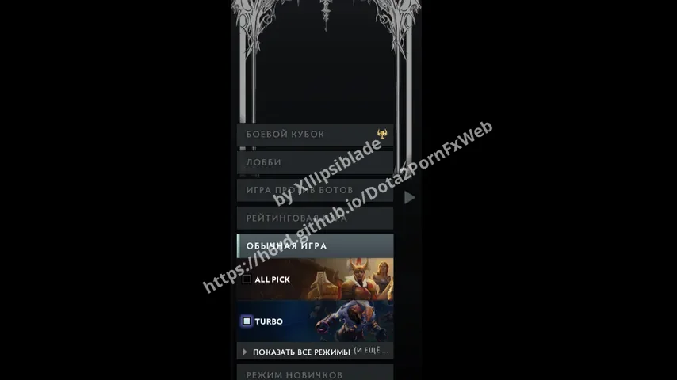

Dota 2 Parts mods
Different individual parts, like for the HUDs.
 Black Top Bar
Black Top Bar Kaneki Search Bar
Kaneki Search Bar Scolopendra Search Bar
Scolopendra Search Bar Sematary Search Bar
Sematary Search Bar Hypergamy Search Bar
Hypergamy Search Bar Windows Xp Top Bar
Windows Xp Top Bar Larger Minimap
Larger Minimap Larger Timer
Larger Timer Grey Search Bar
Grey Search Bar Grey Minimap
Grey Minimap Kaneki Mach
Kaneki Mach Kaneki Mach V1.2
Kaneki Mach V1.2
Gotic Tcoaal Search Bar
Tcoaal Search Bar Rose Lycoris Mode Cards
Rose Lycoris Mode Cards Noir Rose Top Bar
Noir Rose Top Bar Rose Overcast Search Bar
Rose Overcast Search Bar Bluelock Scoreboard And Shop
Bluelock Scoreboard And Shop Purple Minimap
Purple Minimap Pink Play Button
Pink Play Button Grey Play Button
Grey Play Button Cupsize Search Bar
Cupsize Search Bar